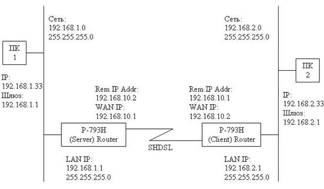

Пример настройки SHDSL-модемов P-793H по схеме "точка-точка", при условии, что они будут работать в режиме маршрутизатора
Статья: 1800
Вопрос:
Как настроить SHDSL-модемы P-793H по схеме "точка-точка", при условии, что они будут работать в режиме маршрутизатора?
Ответ:
Приведем пример настройки модемов P-793H в режиме маршрутизатора. Модемы нужно настроить в режиме маршрутизатора, т.к. необходимо объединить разные подсети. Предположим, нам необходимо связать два компьютера с IP-адресами 192.168.1.33 и 192.168.2.33 (или подсети 192.168.1.x и 192.168.2.x).

Настройки модемов можно производить как через веб-конфигуратор, так и через telnet-соединение. В данном примере рассмотрим последний вариант.
Обращаем ваше внимание, что в этой схеме NAT должен быть отключен на обоих модемах.
1. Настройка модема P-793H (Server):
Menu 1 - General Setup
System Name= P-793H
Location=
Contact Person’s Name=
Domain Name=
Edit Dynamic DNS= No
Route IP= Yes
Bridge= No
Menu 2 - WAN Setup
Service Mode= 2wire
Service Type= Server
Rate Adaption= Enable Rate Adaption= N/A
Transfer Max Rate(Kbps)= 5696 Transfer Max Rate(Kbps)= N/A
Transfer Min Rate(Kbps)= 192 Transfer Min Rate(Kbps)= N/A
Standard Mode= ANSI(ANNEX_A) Standard Mode= N/A
Wan Backup Setup:
Check Mechanism = DSL Link
Check WAN IP Address1 = 0.0.0.0
Check WAN IP Address2 = 0.0.0.0
Check WAN IP Address3 = 0.0.0.0
KeepAlive Fail Tolerance = 0
Recovery Interval(sec) = 0
ICMP Timeout(sec) = 0
Traffic Redirect = No
Dial Backup = No
Menu 3.2 - TCP/IP and DHCP Setup
DHCP Setup
DHCP= Server
Client IP Pool Starting Address= 192.168.1.33
Size of Client IP Pool= 32
Primary DNS Server= 0.0.0.0
Secondary DNS Server= 0.0.0.0
Remote DHCP Server= N/A
TCP/IP Setup:
IP Address= 192.168.1.1
IP Subnet Mask= 255.255.255.0
RIP Direction= Both
Version= RIP-2B
Multicast= None
IP Policies=
Edit IP Alias= No
Menu 11.1 - Remote Node Profile
Rem Node Name= MyISP Route= IP
Active= Yes Bridge= No
Encapsulation= ENET ENCAP Edit IP/Bridge= Yes
Multiplexing= LLC-based Edit ATM Options= No
Service Name= N/A Edit Advance Options= N/A
Incoming: Telco Option:
Rem Login= N/A Allocated Budget(min)= N/A
Rem Password= N/A Period(hr)= N/A
Outgoing: Schedule Sets= N/A
My Login= N/A Nailed-Up Connection= N/A
My Password= N/A Session Options:
Authen= N/A Edit Filter Sets= No
Line= 1 Idle Timeout(sec)= N/A
<для перехода к меню 11.3 установите значение Yes в поле Edit IP/Bridge>
Menu 11.3 - Remote Node Network Layer Options
IP Options: Bridge Options:
IP Address Assignment = Static Ethernet Addr Timeout(min)= N/A
Rem IP Addr = 192.168.10.2
Rem Subnet Mask= 255.255.255.0
My WAN Addr= 192.168.10.1
NAT= None
Address Mapping Set= N/A
Metric= 2
Private= No
RIP Direction= None
Version= RIP-1
Multicast= None
IP Policies=
<на обоих модемах нужно отключить Firewall (по умолчанию он включен), в противном случае модем будет блокировать весь трафик из WAN в LAN>
Menu 21.2 - Firewall Setup
The firewall protects against Denial of Service (DoS) attacks when
it is active. The default Policy sets
1. allow all sessions originating from the LAN to the WAN and
2. deny all sessions originating from the WAN to the LAN
You may define additional Policy rules or modify existing ones but
please exercise extreme caution in doing so
Active: No
LAN-to-WAN Set Name: ACL Default Set
WAN-to-LAN Set Name: ACL Default Set
Please configure the Firewall function through Web Configurator
P-793H (Client):
Menu 1 - General Setup
System Name= P-793H
Location=
Contact Person’s Name=
Domain Name=
Edit Dynamic DNS= No
Route IP= Yes
Bridge= No
Menu 2 - WAN Setup
Service Mode= 2wire
Service Type= Client
Rate Adaption= N/A Rate Adaption= N/A
Transfer Max Rate(Kbps)= N/A Transfer Max Rate(Kbps)= N/A
Transfer Min Rate(Kbps)= N/A Transfer Min Rate(Kbps)= N/A
Standard Mode= N/A Standard Mode= N/A
Wan Backup Setup:
Check Mechanism = DSL Link
Check WAN IP Address1 = 0.0.0.0
Check WAN IP Address2 = 0.0.0.0
Check WAN IP Address3 = 0.0.0.0
KeepAlive Fail Tolerance = 0
Recovery Interval(sec) = 0
ICMP Timeout(sec) = 0
Traffic Redirect = No
Dial Backup = No
Menu 3.2 - TCP/IP and DHCP Setup
DHCP Setup
DHCP= Server
Client IP Pool Starting Address= 192.168.2.33
Size of Client IP Pool= 32
Primary DNS Server= 0.0.0.0
Secondary DNS Server= 0.0.0.0
Remote DHCP Server= N/A
TCP/IP Setup:
IP Address= 192.168.2.1
IP Subnet Mask= 255.255.255.0
RIP Direction= Both
Version= RIP-2B
Multicast= None
IP Policies=
Edit IP Alias= No
Menu 11.1 - Remote Node Profile
Rem Node Name= MyISP Route= IP
Active= Yes Bridge= No
Encapsulation= ENET ENCAP Edit IP/Bridge= Yes
Multiplexing= LLC-based Edit ATM Options= No
Service Name= N/A Edit Advance Options= N/A
Incoming: Telco Option:
Rem Login= N/A Allocated Budget(min)= N/A
Rem Password= N/A Period(hr)= N/A
Outgoing: Schedule Sets= N/A
My Login= N/A Nailed-Up Connection= N/A
My Password= N/A Session Options:
Authen= N/A Edit Filter Sets= No
Line= 1 Idle Timeout(sec)= N/A
<для перехода к меню 11.3 установите значение Yes в поле Edit IP/Bridge>
Menu 11.3 - Remote Node Network Layer Options
IP Options: Bridge Options:
IP Address Assignment = Static Ethernet Addr Timeout(min)= N/A
Rem IP Addr = 192.168.10.1
Rem Subnet Mask= 255.255.255.0
My WAN Addr= 192.168.10.2
NAT= None
Address Mapping Set= N/A
Metric= 2
Private= No
RIP Direction= None
Version= RIP-1
Multicast= None
IP Policies=
<на обоих модемах нужно отключить Firewall (по умолчанию он включен), в противном случае модем будет блокировать весь трафик из WAN в LAN>
Menu 21.2 - Firewall Setup
The firewall protects against Denial of Service (DoS) attacks when
it is active. The default Policy sets
1. allow all sessions originating from the LAN to the WAN and
2. deny all sessions originating from the WAN to the LAN
You may define additional Policy rules or modify existing ones but
please exercise extreme caution in doing so
Active: No
LAN-to-WAN Set Name: ACL Default Set
WAN-to-LAN Set Name: ACL Default Set
Please configure the Firewall function through Web Configurator
Примечание: Значения VPI и VCI должны обязательно совпадать на обоих модемах. В меню 11.1 установите Edit ATM Options= Yes. Откроется меню 11.6 Remote Node ATM Layer Options VPI/VCI, в котором обратите внимание на значения VPI# и VCI#.